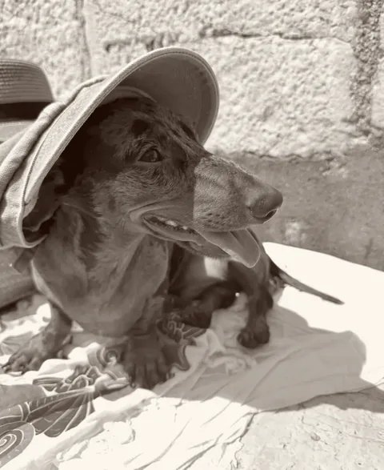
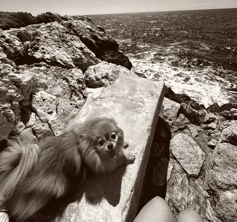

Flexible on timing
Freddie
Lea took loving care of our Freddie, and we really appreciated her flexibility when we arrived later than we’d hoped. Highly recommended.
Deniz A. · 23 July 2026
Petite Paws · Version 4 · October 2026
How Petite Paws looks, sounds and moves. Derived from Léa’s logo and her Instagram, built for the website, print and social media.
01
Roman capitals for the name, a paw above, a short rule, “Dog sitting” in wide capitals and a hand-drawn heart. The logo appears whole and in one colour. It was created with AI and supplied by the client; the website uses a vector tracing of it.
Keep free space of at least the height of the words “DOG SITTING” on every side. The full lockup is at least 120 px wide on screen and 30 mm in print.
Stretching, rotating, recolouring, outlines, shadows, placing the logo on a photo, and using the paw as decoration.
02
One colour carries everything: the brown of the logo, on cream. No second hue. The dark spread is the same brown, used as a surface.
#411A05Logo, headlines, text, buttons, the dark spread#2C1103Button hover#6A4B37Secondary text, labels, captions#8C7564Field lines, chip and button borders#FBF7F0Page background#F4EDE2Contact area, second surface#F3E9DCSecondary text on the dark spread| Combination | Ratio | Requirement |
|---|---|---|
| AaBrun on Crème | 14,3 : 1 | Text ≥ 4,5 : 1 · passed |
| AaBrun doux on Crème | 7,4 : 1 | Text ≥ 4,5 : 1 · passed |
| AaBrun doux on Sable | 6,8 : 1 | Text ≥ 4,5 : 1 · passed |
| AaCrème on Brun | 14,3 : 1 | Text ≥ 4,5 : 1 · passed |
| AaCrème clair on Brun | 12,7 : 1 | Text ≥ 4,5 : 1 · passed |
| AaPlaceholder on Sable | 5,6 : 1 | Text ≥ 4,5 : 1 · passed |
| Trait on Crème | 4,1 : 1 | Interface ≥ 3 : 1 · passed |
| Trait on Sable | 3,7 : 1 | Interface ≥ 3 : 1 · passed |
Calculated by the build from the palette with the WCAG 2.2 formula. The build stops if a pair falls below its requirement.
03
Two typefaces with clear jobs. A high-contrast Didone sets everything that is meant to be seen, a calm sans carries everything that has to be read.
Display
Bodoni Moda
Chosen for the editorial direction of the site. The logo’s lettering was drawn by AI and exists as no font. The nearest free typefaces with Roman capitals would be Cinzel or Cormorant; Bodoni Moda deliberately sets a magazine tone instead. Optical sizes on, weights 400 to 500, italic for emphasis.
Text
Figtree
Geometric and quiet, close to the wide capitals of “Dog sitting”. Labels in capitals with 0.2 to 0.28 em tracking.
Leave the leash
In their owners’ words.
Dog sitting · Nice & surroundings
Stays at your home, walks and day care.
Both fonts are licensed under the SIL Open Font License and served from the site itself.
04
Few marks, always in Brun. They come from the logo and the masthead.
Dog sittingNiceby Léa
Baladessur demande
05
Calm and unhurried: a quick start, a long glide out. Never more than one large movement at a time. Movement uses transforms only, headline and images are visible from the first frame.
| Beat | Duration | Used for |
|---|---|---|
| Breath | 0,25 s | Colours, hover, buttons |
| Step | 0,4 to 0,6 s | Menu, questions, the heart of an entry |
| Stage | 1,2 s | The masthead rules drawing in; the ten letters of the wordmark settling one after the other, 45 ms apart |
| Slow | 7 to 11 s per entry | The guest book turning its pages |
cubic-bezier(.22, 1, .36, 1). With reduced motion selected in the system settings, everything is shown at once and the guest book stands still.
06
Real dogs, photographed by Léa: Pluto in his sun hat, Pluto on the sofa, Mele by the sea. Never stock, never generated animals presented as real. At most one photo per page section.


Léa’s own photos with the owners’ consent. Portrait 4 : 5 for social media. One dog, one moment.
Stock photos, generated dogs or people, text on photos, more than two photos per page.
07
The building blocks of the website, live.
Choice
Field
La Carte
Petite Paws · Nice & surroundings
Services · prices on request
Garde à domicileon request
Stays at your home. Léa stays at your home while you are away. Guest book: Rocket
Garde à la journéeon request
Day care. For a day, also at the last minute. Guest book: Ronja
Baladeson request
Walks. Walks and play time. Guest book: Rio
Les chatson request
Cats. Cleo, a very shy cat, is one of Léa’s guests. Guest book: Cleo
Heart: an owner’s review in the guest book.
Guest book entry
Flexible on timing
Freddie
Lea took loving care of our Freddie, and we really appreciated her flexibility when we arrived later than we’d hoped. Highly recommended.
Deniz A. · 23 July 2026
08
Warm, short, factual. English first, French alongside. Every statement has a source; what owners say is quoted word for word, in their language.
“Léa stays at your home while you are away.” Short sentences, active verbs. Service names on La Carte stay French in both versions, the explanation follows in the reader’s language. In French “vous”, and a thin space before : ; ! ?
“Fur babies”, superlatives, invented promises about how Léa works. Quotes that are shortened or polished.
Petite PawsLéaNice & surroundingsNice et alentoursCôte d’Azur@lepetitepaws
09